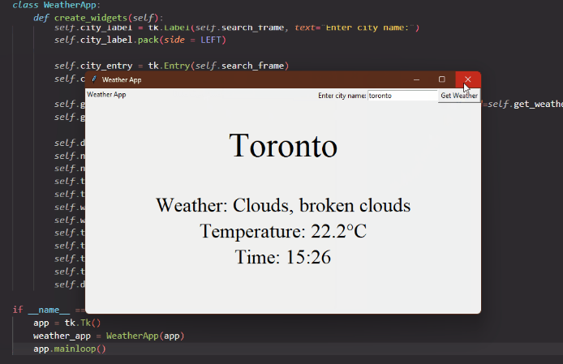

Little Weather App Project

Embarking on my first solo Python project
I set out with a clear goal in mind: to dive headfirst into the world of programming and
build something practical from scratch. The project took shape as a nifty little weather app, crafted using
a blend of web scraping and Tkinter, Python's graphical user interface library. My aim was twofold: firstly,
to apply the coding concepts I'd been learning and, secondly, to create a real-world tool that could fetch
and display up-to-the-minute weather information at my fingertips. In the process, I struggled with data
retrieval from websites, honed my problem-solving skills, and tried to make something similar to a
user-friendly interface.
What skills did I need to use?
- API Integration: I used the OpenWeatherMap API to fetch data based on user input.
- Web Scraping: Using the ‘requests’ library to send an HTTP GET request to the API and
retrieve weather data in JSON format
- Graphical User Interface (GUI): I worked with the ‘tkinter’ library to create the
labels, buttons and frames to design the interface.
- Error Handling: I implemented a way of handling an error by checking the HTTP response
status and displaying the error message if it failed.
- Data Manipulation: With all the information in the JSON file, I accessed and used just
the ones I found important.
- Data Formatting: For example in the temperature data by changing fahrenheit to celsius
or managing time.
- Time Handling: Used the ‘time’ module to get the current time and adjusted it based on
the city’s time zone.
- Layout Management: By organizing my GUI layout using grid and pack.
- Object-Oriented Programming: I structured the code using a class-based approach.
Code
- I set up a basic window configuration
- In this function firstly I created the URL for accessing the API to then do the web scraping. With the
data I got as a response I asked for each piece of information required and gave them the proper format,
For example; with the citytime I needed to divide the number the page gave me by 3600(1 hour expressed
in seconds) and then add it to the base time. After that, I add the current time in minutes by accessing
the index 4 of the gmtime tuple.
Lastly, I created each label and set them so that I could use them outside of the function by using the
benefits of working with classes
- In this function I defined how the user interface layout was going to look, I added some rows and
columns to work with a grid format where on the first row I added the search bar functionality (which
contains a label, entry and a button all inside a frame). Everything after it is just the information I
got before being displayed so they are just labels with their proper font.
What would I do differently?
Well, if I were to start all over again, I would definitely structure the code in another
way in order to make it more readable, maybe by separating it into different functions. Another thing I
would like to improve is the design of the interface as I'm not satisfied with the result, maybe in my spare
time I can dedicate some to doing so.